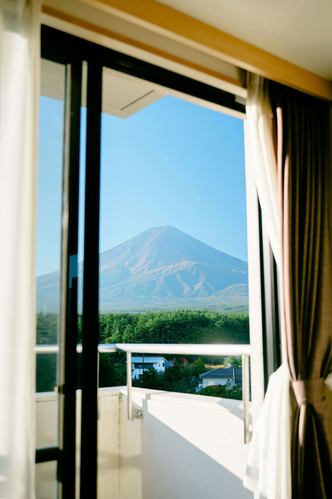
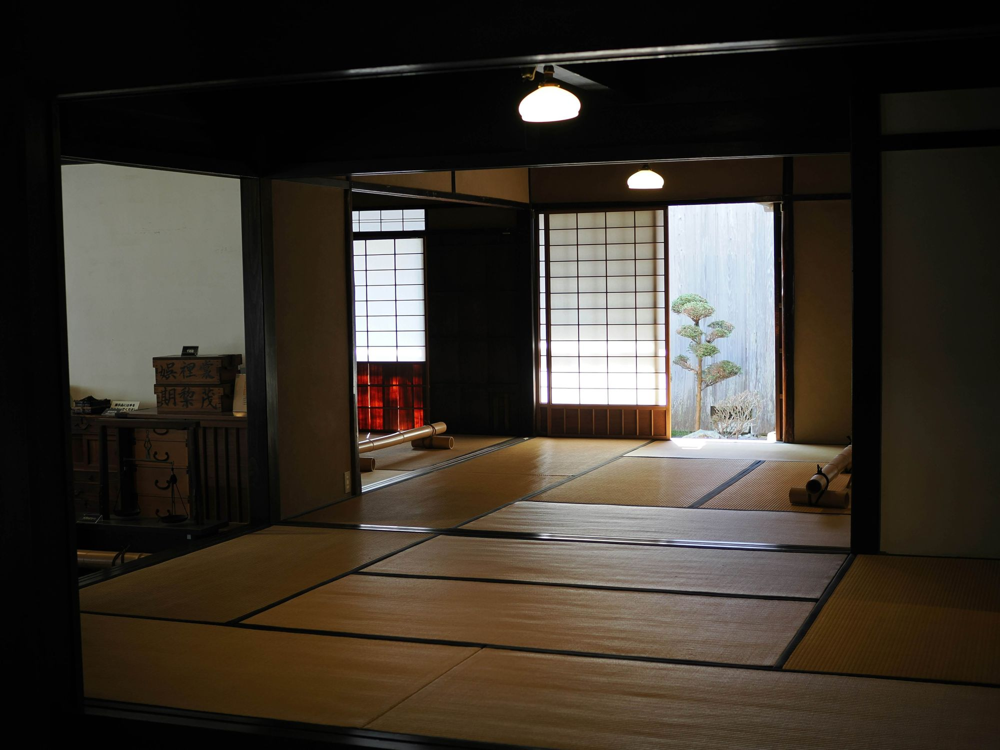
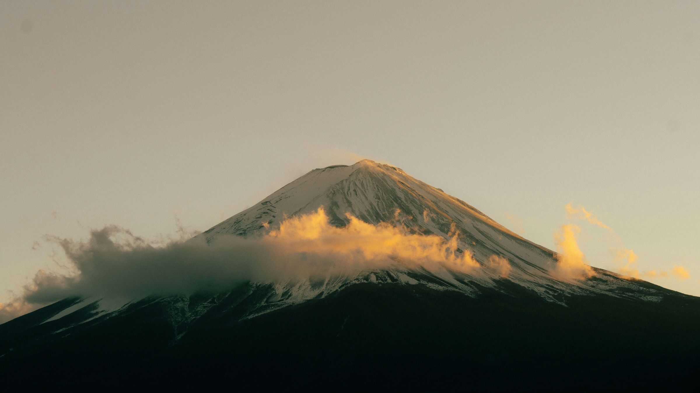
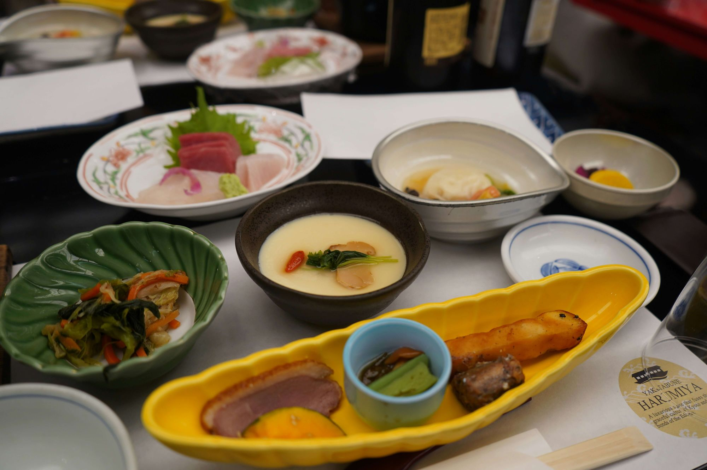
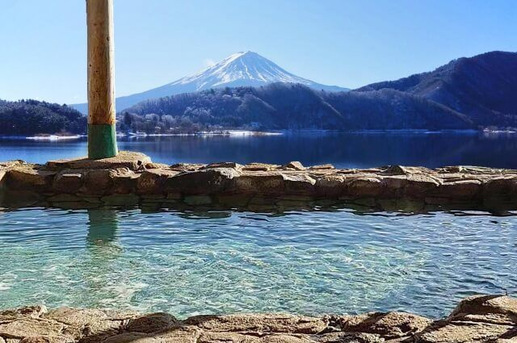
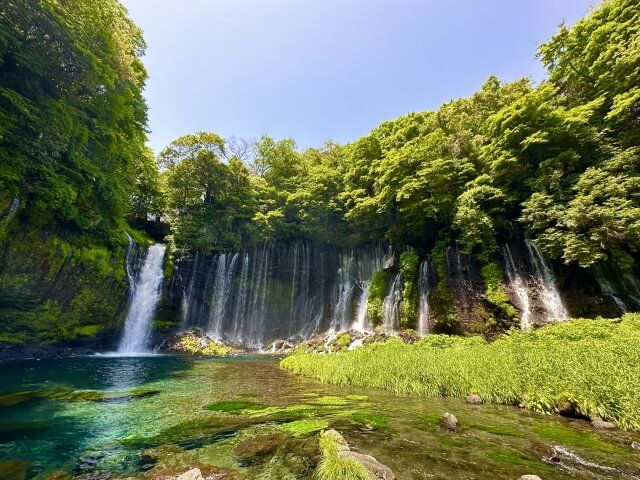
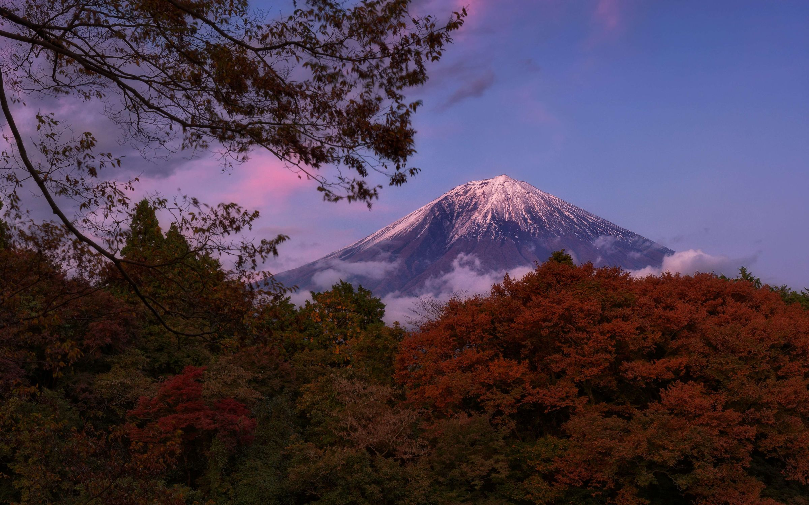

01
富士山を眺める。
朝、目を覚ます。
カーテンを開けると、
そこに富士山がある。
季節や時間によって表情を変える
その姿を眺めながら過ごす時間は、
ここでしか味わえないものです。




About
観光地を巡るだけが、
旅ではありません。
窓の外に広がる富士山を眺める。
湯に浸かり、
季節の料理を味わう。
何気ない時間をゆっくり楽しむ。
そんな「宿で過ごす時間」まで含めて、
旅そのものを楽しんでいただきたい。
富士宮の自然と文化に寄り添いながら、
心ほどけるひとときをお届けします。


Moments

01
朝、目を覚ます。
カーテンを開けると、
そこに富士山がある。
季節や時間によって表情を変える
その姿を眺めながら過ごす時間は、
ここでしか味わえないものです。

02
富士宮をはじめ、
静岡には豊かな食材があります。
その土地で採れたものを、
その季節に最もおいしい形で。
一皿一皿に、
富士の麓ならではの季節を込めています。

03
予定を詰め込まない。
スマートフォンから少し離れて、
温泉につかり、
静かな部屋でゆっくり過ごす。
何かをするためではなく、
何もしないために訪れる。
そんな贅沢も、
旅のひとつだと私たちは考えています。
Dining
旅の記憶に残るのは、景色だけではありません。
その土地で食べたものもまた、
旅を思い出す大切な記憶になります。

富士宮・静岡周辺の食材を中心に、
旬の味わいを大切にした料理をご用意します。
季節ごとに変わる食材。
料理人の技。
器や盛り付け。
目で楽しみ、
香りを楽しみ、
最後の一口まで味わう。
富士宮で過ごす一夜を、
料理からも感じていただけるように。


春Spring
山菜・春野菜など

夏Summer
鮎・夏野菜など

秋Autumn
きのこ・山の幸など

冬Winter
静岡の冬の味覚など
Room & Onsen


客室Room
扉を開けた瞬間から、
日常とは少し違う時間が始まります。
木の温もり。
柔らかな光。
窓の向こうに広がる景色。
一日の終わりには、
何も考えずゆっくりと身体を休めてください。



温泉Onsen
温泉に身体を預け、
ゆっくりと深呼吸する。
旅の疲れを癒やしながら、
時間を忘れて過ごす。
富士宮の自然を感じながら、
心と身体をゆっくり整える時間です。
Fujinomiya
旅館で過ごす時間だけでなく、
富士宮の街そのものも旅の一部。
富士山の麓だからこそ出会える
景色や文化をお楽しみください。

雄大な姿を間近に感じる。

富士山信仰の歴史と文化に触れる。

水の流れと自然がつくる、
富士山麓ならではの景色。

広い空と大地の中で、
富士山をさらに近くに感じる。
Promise
一度訪れて終わるのではなく、
「また、この場所に来たい。」
そう思っていただける旅館でありたい。
華美なサービスだけではなく、
一人ひとりのお客様に寄り添うこと。
料理、客室、温泉、景色、
そして人。
そのすべてを通して、
心に残る時間をお届けします。
01
一人ひとりのお客様に寄り添い、
心地よく過ごしていただける時間をつくります。
02
その時、その場所でしか味わえない
料理や景色を大切にします。
03
富士宮だからこそ味わえる自然と文化を、
旅館での時間とともに届けます。

Reservation
富士山を眺める。
季節の料理を味わう。
温泉につかる。
そして、何もしない時間を楽しむ。
忙しい日常から少し離れて、
自分たちのための時間を
過ごしてみませんか。
富士宮の麓で、
皆さまのお越しをお待ちしています。
お電話でのご予約・お問い合わせ
TEL 000-0000-0000